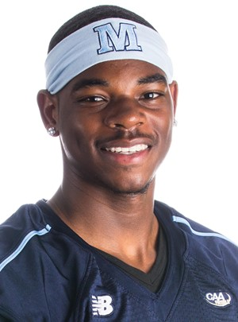

page 2
/
page 2
/
page 2
Isaiah Robinson
Isaiah’s Journey
Birth date: August 6, 1998
Team: University of Maine

Weight: 200lbs.
Height: 6‘3"
Junior Year
• - Avalon High School Offensive Player of the Year
• DMV Top Passing Completion Percentage 69.8%
• DMV Top 5 Passing Yards 2,578
Senior Year
• - MIAA All Conference
• Lead team to MIAA A Conference Champions
• Baltimore Fox45 News Prep Player
• Maryland Crab Bowl Selection
• Nike Elite 11 Top 5 (Charlotte, NC)
https://www.youtube.com/watch?v=0rVhlWcoEBc&t=2s